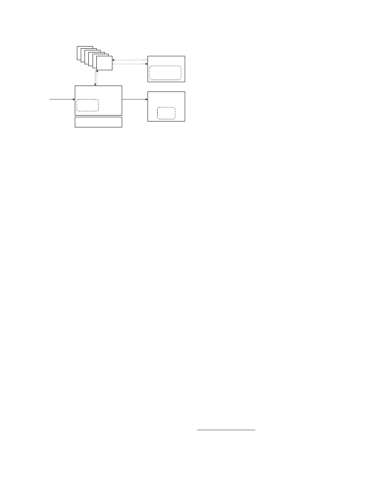
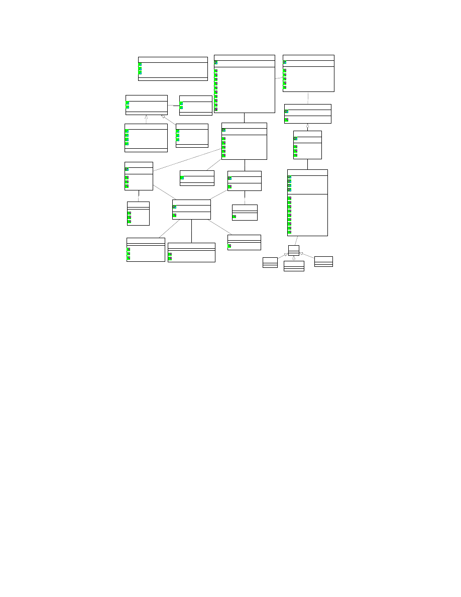
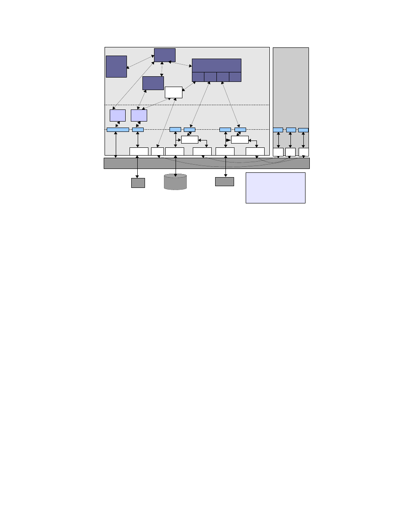
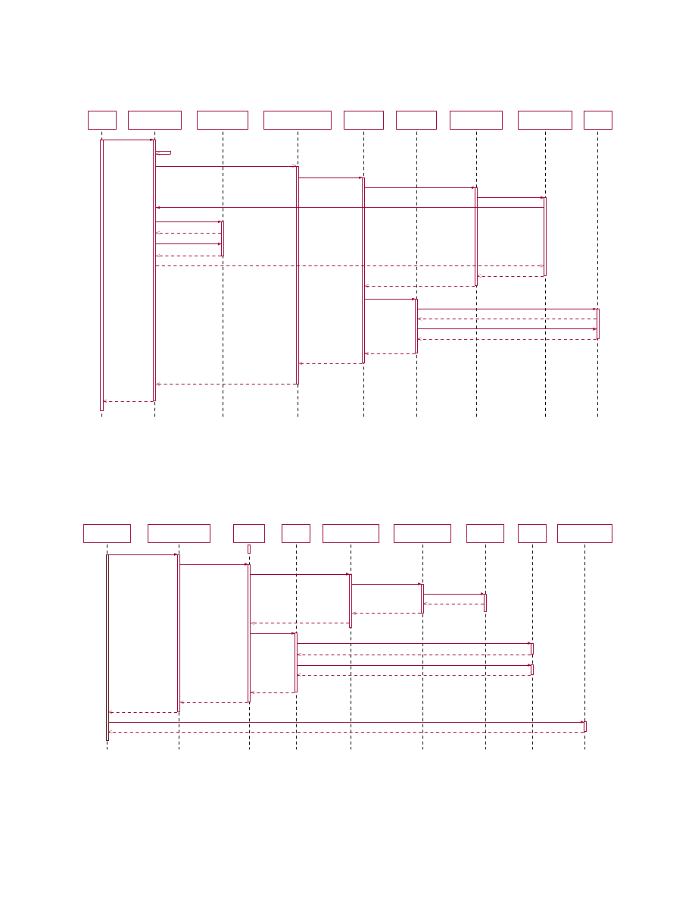

Flexible Integrity Protection and Verification Architecture for
Virtual Machine Monitors
Bernhard Jansen, HariGovind V. Ramasamy, and Matthias Schunter
IBM Zurich Research Laboratory
CH-8803 R¨uschlikon, Switzerland
Email:
{
bja, hvr, mts
}
@zurich.ibm.com
Abstract
Lack of security of virtual machines and lack of trust
into correct execution of virtualization engines is a
major concern that is limiting the broad adoption of
virtual machine technology. In this paper, we look
at ways of improving virtual machine (VM) secu-
rity, specifically in the context of integrity of VMs,
by adding scalable trusted computing concepts to a
virtual machine infrastructure. We describe methods
for doing integrity measurement recording, and re-
porting for VMs. We place particular emphasis on
how those methods can be made extensible and flex-
ible with the goal of obtaining a generic attestation
and sealing framework for VMs.
1
Introduction
The concept of hardware virtualization has witnessed
a resurgence of interest. A key application of virtu-
alization is utility computing in which virtualization
can help significantly improve server utilization, con-
trol the problem of server sprawl, and thereby reduce
management and space costs. Virtualization also en-
ables a wide variety of other applications such as se-
cure sandboxing of malicious content. Virtual ma-
chine monitors (VMMs) such as Xen [
1
] and VMware
ESX [
2
] can host one or multiple instances of tradi-
tional operating systems (such as Linux and Win-
dows XP) in parallel on a single platform. Current
state-of-the-art VMMs provides elementary isolation,
resource sharing, and policy enforcement properties.
Each OS instance executes inside a separate compart-
ment called a virtual machine (VM).
Lack of security of virtual machines and lack of
trust in the correct execution of virtualization en-
gines is a major concern that is limiting the broad
adoption of virtual machine technology.
Perhaps,
nowhere is this concern more evident than in data
centers where virtual machines belonging to multiple
(perhaps, competing) companies are to be hosted on
the same physical infrastructure.
The following ways can be used to provide better
security of virtual machines:
1.
At the virtualization software level, the policy
enforcement capabilities of the virtual machine
monitor itself can be significantly improved to
allow enforcement of more stringent and fine-
grained security policies [
3
].
2.
Implement sound policy management and en-
forcement of information flow constraints. One
example are virtual firewalls.
3.
Increasing security of virtualized devices. One
example is secure virtualized storage.
4.
Integrate integrity validation and protection
mechanisms into the virtual machine monitor.
This means that customers can validate the in-
tegrity of the virtual machine monitor and its
essential services.
In this paper, we look at the aforementioned ways of
improving VM security, specifically in the context of
integrity of VMs, by adding scalable trusted comput-
ing concepts to a virtual machine infrastructure. We
are interested in enhancing the security of the virtu-
alization layer by establishing finer-grained trust do-
mains and offering methods for external stake-holders
to verify, using Trusted Computing (TC), the in-
tegrity of the virtualization software layer and its
associated policies. Complementing those methods
would be a new layer of enforcement mechanisms ap-
propriate for guiding the behavior of the virtualiza-
tion software layer and hosted operating system in-
stances. These enforcement mechanisms are what we
call “security services” and are the focus of this pa-
per. Other recent works (such as [
4
,
5
,
3
,
6
,
7
]) have
also taken the approach of combining Trusted Com-
puting (TC) [
8
] and hardware virtualization concepts
for improving security.
Integrity measurement, recording, and reporting
are among the most important features of a TPM-
equipped platform. Those features enable a verifier
to check whether the platform is in a trustworthy
state. What constitutes a trustworthy state is left to
the discretion of the verifier. While integrity man-
agement has been explored for single operating sys-
tems, we describe methods for doing integrity mea-
surement, recording, and reporting for virtual ma-
chine monitors hosting multiple VMs. We place par-
ticular emphasis on how those methods can be made
extensible and flexible with the goal of obtaining a
generic attestation and sealing framework for VMs.
By extensibility, we mean that it should be possible
to provide integrity functions even if the virtual ma-
chines included arbitrary virtual devices. Flexibility
means that the verifier should be able to specify what
aspects of a virtual machine’s integrity it is interested
in.
2
Background
2.1
Trusted Computing
A TPM is a hardware implementation of multiple
roots-of-trust
, each for a different intended purpose.
e.g., root of trust for reporting, root of trust for mea-
surement, and root of trust for storage. The spec-
ification of the TPM is given by the Trusted Com-
puting Group (TCG) [
8
]. Each root of trust enables
parties, both local and remote, to place trust on a
TPM-equipped platform that the platform will be-
have as expected for the intended purpose. By defi-
nition, the parties trust each root-of-trust, and there-
fore, it is essential that the root-of-trust always be-
haves as expected. Given that requirement, a hard-
ware root-of-trust—especially one that is completely
protected from software attacks and tamper-evident
against physical attacks, as required by the TPM
specification—is better than a software-only root-of-
trust because of the inherent difficulty of validating
the software that provides the root-of-trust in the first
place.
The TPM has Platform Configuration Registers
(PCRs), which are 160-bit registers useful for storing
platform integrity measurements. The values stored
in PCRs are essential for TPM functions like attesta-
tion and sealing. The TPM specification requires the
first 16 PCRs to be non-resettable. The values stored
in those registers can only be
extended
. The contents
of other PCRs can be changed only by the reset or
extension operations. The extension operation takes
an input value and a PCR as input arguments, and
replaces the contents of the PCR with a SHA-1 hash
Physical Hardware
Management
of security,
devices,
VMs, and I/O
Dom0
GuestOS
User
Software
DomU 1
GuestOS
User
Software
DomU 2
GuestOS
User
Software
DomU 3
VMM Core
Figure 1: Xen Virtual Machine Architecture
of the string representing the concatenation of the old
PCR contents and the input value.
The TPM features that we leverage in this pa-
per are integrity measurement, recording, attesta-
tion, and sealing. “Measurement” of a component in-
volves computing the SHA-1 hash of the binary code
of that component. The sequence of measured val-
ues are stored in a
measurement log
, external to the
TPM. “Recording” a measurement involves extend-
ing a PCR with the hash. “Attestation” refers to
the challenge-response style cryptographic protocol
for a remote party to query the recorded platform
measurement values and for the platform to reliably
report the requested values. “Sealing” is a TPM oper-
ation that is used to ensure that a certain data item
is accessible only under platform configurations re-
flected by PCR values. The “unsealing” operation
will reveal the data item only if the PCR values at
the time of the operation match the specified PCR
value at the time of sealing.
2.2
Virtual Machine Monitors and
Xen
Virtualization is a technology that allows abstract-
ing away the real hardware configuration of a sys-
tem and allows multiple virtual machines, each run-
ning its own operating system and applications, to
be hosted on a single physical machine. Virtual com-
puting involves using a layer of software, called the
Virtual Machine Monitor (VMM), between the phys-
ical hardware and the operating system to provide
the illusion of a real physical machine to the op-
erating system. The VMM does this by emulating
the physical machine in software. The operating sys-
tems running in the virtual machines are called
guest
operating systems. Depending on how the emula-
tion is done, changes may or may not be required
to the guest operating systems. Some VMMs like
VMware ESX and Xen V3 can leverage recently in-
troduced processor virtualization support and do not
require any change to be made to the guest operat-
ing systems. Without processor support, changes to
the guest operating system are required (e.g., Xen
2
para-virtualization [
1
]). The OS and applications of
a VM run upon the VM’s own virtual resources (vir-
tual CPU, virtual NIC, virtual RAM, virtual disks,
etc.). The VMM maps the virtual resources to the
physical resources and also manages access to the in-
put/output devices.
Although we present our overall design for the se-
curity services in generic terms, in Section
5.5
, we
describe the concrete realization of our design in the
context of the Xen VMM or the Xen hypervisor.
1
Hence, we briefly mention the Xen virtual machine
architecture here (Figure
1
). In Xen-speak, running
instances of virtual machines are called
domains
. A
special domain, called Dom0 or domain zero, is the
first domain that is created. This domain controls
all other domains, called user domains or DomUs.
For a given physical device, the native device driver
is part of at most one VM. If the device is to be
shared with other VMs, then the VM with the native
device driver makes the device available through
de-
vice channels
implemented using shared memory. For
that purpose, the VM with the native device driver
provides a
back-end driver
and any VM that wants to
share the device exports a virtual device driver called
the
front-end driver
to the back-end driver.
3
Integrity
Management
for
Virtual Machines
In today’s virtualized environments integrity man-
agement of virtual machines is an important chal-
lenge.
Integrity management includes protection,
measurement, reporting, and verification of the in-
tegrity of virtual machines, In a traditional (non-
virtualized) server environment, users today are con-
vinced that their servers are trustworthy by
–
Running the servers themselves,
–
Asking a provider to guarantee full control over
the server (i.e., a root login, a dedicated cage in
a larger data center, or a dedicated data center),
–
Asking a provider to provide log files and other
evidence that allows the user to heuristically val-
idate critical installations, or
–
Performing regular audits of the hosted servers.
While many of the above concepts used for managing
integrity of machines in non-virtualized server envi-
ronments will also be applicable for virtual servers,
1
Another virtual machine monitor that we envision to use
is Fiasco [9].
integrity management in a virtualized environment
is even more difficult due to the unique security
and privacy challenges that arise in such an environ-
ment. Users would like to be convinced that virtual
servers are as secure as physical servers. However,
that is non-trivial since the security of virtual servers
depends not only on the server configuration, but
also on the security of the virtual machine monitor
(VMM) and its services and the ability to guarantee
an acceptable degree of non-interference and isolation
among virtual machines. In addition to being able
to prove security to one user, an important privacy
requirement is a guarantee that this proof does not
yield information about other users on the VMM. In
particular, when competing customers are co-hosted
on the same physical hardware, no “virtual cages” ex-
ist today that can guarantee their verifiable isolation.
In order to provide such guarantees, several aspects
of the VMM need to be verifiable and protected:
–
The virtual machine monitor (VMM) software
needs to be designed to satisfy the security re-
quirements of a customer.
–
The software running on the machine needs to
correspond to a correct installation of a given
virtual machine monitor.
–
The policies and configuration files used by the
VMM should guarantee the security require-
ments of the customer. In addition, the policies
should prevent unauthorized modification of the
software.
We now introduce concepts that show how to verify
and protect the VMM installation and policies. The
first item listed above, dealing with the writing cor-
rect software is well-studied in the context of formal
methods and out of the scope of this paper.
3.1
Virtual Machine Monitor Model
We now introduce an abstract notion of VMMs
(shown in Figure
2
) that we later use for describ-
ing our security concepts for virtual machines. The
VMM is configured by a policy
p
. At a given time
t
,
a VMM has a state
s
t
and produces log data
l
t
that
is computed by a function
log
(
s
t
).
s
t
reflects the in-
tegrity of the VMM at time
t
. The state can often
be decomposed into a software state
w
t
and a data
state
d
t
. Since truthful reporting of the state of a
compromised VMM cannot be expected, log files and
policies (that are external to the VMM and cannot
be modified by the VMM) are used for approximat-
ing the actual security. While the log file history gives
an indication of past security, security policies enable
3

VMM
Audit
System
log
policy
request
response
state
VM
VM
VM
VM
VM
VM
input
output
User
Hardware
History
log*
requirements
predicate
}
log(s
t
)
Π
s
t
Figure 2: Integrity Model for Virtual Machine Mon-
itors
extrapolation of future security guarantees. The se-
ries of log entries is collected by an independent audit
system in an audit log
log
∗
. The software provides
installation integrity if
w
0
=
w
for some installation
software
w
, where
t
= 0 indicates the installation
time. Each user
u
has a set of security requirements
that are modeled by predicates. A software provides
integrity if a user-defined predicate Π(
s
) is satisfied.
3.2
Generalized Sealing to Protect In-
tegrity
Model:
The concept of sealing can be used to make
a data item
d
inaccessible if the VMM state does
not provide sufficient integrity. It can be modeled
by two functions
seal
and
unseal
. The
seal
function
done at time
t
i
takes as input the data item
d
, a log
projection function
p
(), a predicate Π, and
K
p
which
is the public part of an encryption key
K
. It produces
an encrypted output
e
∈ {
0
,
1
}
∗
that is encrypted
with respect to
K
p
. The log projection function
p
()
takes the log
l
t
i
as input and outputs a subset of
l
t
i
.
The
unseal
function done at time
t
j
takes as input
e
and the log
l
t
j
and outputs
d
iff Π(
p
(
l
t
j
)) = 1.
A simple implementation of the predicate Π would
compare an input
x
to
p
(
l
t
i
), i.e., Π(
x
) :
x
=
p
(
l
t
i
).
Assuming the audit system is correct, one possible
implementation of sealing and unsealing is as follows.
During
seal
(),
K
p
(
p
()
,
Π
, s
) is obtained using the state
s
. On
unseal
(), the audit system decrypts this mes-
sage using its secret key
K
s
and outputs the state
s
iff Π(
p
(
l
t
j
)).
The predicate Π models the various criteria for as-
sessing trustworthiness of the platform. This can be
a simple predicate that compares configurations such
as the input startup config with a fixed configuration
at hibernation time. More complex predicates could
evaluate certain properties such as whether only cer-
tified or well-known software are being used [
10
,
11
].
Usage:
An important application of the sealing
function in integrity management would be to make
inaccessible certain secrets if the integrity of the plat-
form is not guaranteed. An example usage is to seal
data to a software. The usage can be implemented by
a projection
p
() that derives the software state from
the log
l
t
i
(assuming that the log file reliably reflects
the software [
6
]). If the software state at the time
of sealing is
w
=
f
(
l
t
i
) and the software state at the
time of unsealing is
w
0
=
f
(
l
t
j
), then the predicate Π
would be defined as Π(
w
0
) iff
w
0
=
w
. Another ex-
ample usage would be to seal a hard disk to a VMM.
In this case, the software is the VMM. The secret is
a key that is used to decrypt the hard disk.
Special Case - Trusted Platform Module:
The TPM
implements the special case where log entries are re-
stricted to storing hash-values in a limited number of
platform configuration registers (PCR). The log file
projection
p
() is defined as a subset of the PCR in-
dices
{
1
, ..., n
}
. The integrity predicate is defined as
a desired PCR value for each register in this subset.
3.3
Generalized Attestation to Prove
Integrity
Model:
Attestation aims at convincing a user that
the state of the machine is as expected. That is done
by signing a projection of the log file
log
∗
. In our
model, the log file contains a list of all log entries.
An attestation function
attest
obtains a challenge
c
,
a function
f
() (that we describe below), a log file pro-
jection
p
(), and a secret key
K
s
and outputs a signed
message
sign
K
s
(
f
(
p
(
log
∗
))
, c
).
Usage:
Attestation can be used in two ways:
Bi-
nary attestation
signs a subset of the log file. This
means that the function
f
() is the identity function,
i.e.,
f
(
x
) =
x
. It enables the user to obtain a signed
subset of the log file and requires the user to locally
assess its trustworthiness.
Property-based attestation
[
10
,
11
,
12
] allows the user to only obtain the results
of function evaluations on the log file. For example,
a user can specify what software
w
1
, w
2
, ...
he deems
acceptable and define the function
f
() to assess from
the log file whether any other software was executed.
Similarly,
f
() can be used to extract certain policies
or evaluate other conditions. Attestation can be used
to convince a user of the integrity of the machine
2
. It
can also be used to validate the integrity of machines
when connecting to a network (cf. Cisco’s Network
Admission Control).
2
Note that this usually requires that the user has a inde-
pendent computing device to do this verification. One example
is a customer verifying a data center.
4
(id, type, log)
(id
1
, type
1
, log
1
)
(id
2
, type
2
, log
2
)
(id
11
, type
11
, log
11
)
(id
21
, type
21
, log
21
)
(id
2n
, type
2n
, log
2n
)
...
Figure 3: Trees of log entries
Special Case - Trusted Platform Module:
For the
TPM,
f
() is the identity function and
p
() is specified
by a subset of the PCRs. The attestation token is a
signed message containing the challenge and a subset
of the PCRs.
3.4
Extensibility and Flexibility
The model that we have described so far is too sim-
plistic for the real-world. In practice, a VMM consists
of a large number of subsystems and components that
depend on each other. Examples include hardware
components such as CPU and devices, software com-
ponents such as kernel, libraries, drivers, and user
applications. In order to provide extensibility, new
types of subsystems need to be added at run-time.
Furthermore, it is desirable to have each subsystem
be able to log and attest to arbitrary aspects of its
behavior. A disk, for example, should be able to selec-
tively log its contents, its access control list, or other
aspects that need to be configurable by the policy.
It is clear that in reality, it is difficult to justify a
single notion of a state or a single logging function.
A more flexible alternative is to represent the state
by a tree of triples (see Figure
3
), one triple for each
component. Each triple contains an identifier, a com-
ponent type
type
, and a vector of log values
log
. Sub-
components are modeled as children of a node. The
overall effect is that the log data is contained in a
hierarchy of vectors of log values. It can be extended
by adding or removing children nodes. Adding a de-
vice is, for example, reflected by adding a new type
of child to the sub-tree of
type
device.
Note that while log files are represented by trees,
we now have to define how to apply attestation and
sealing to these
log trees
. Sealing and attestation re-
quire a projection and a predicate. For a log trees,
the projection function
p
() is simply a subset of the
nodes of the tree, and for each of those nodes in the
subset, a subset of the log entries. The predicate Π
is then defined on
p
.
3.5
Privacy Protection
The integrity of certain sub-states can be essential
to multiple users. Conversely, sub-states can be pri-
vate to one or more users. For example, while the
integrity of the VMM core would be of interest to all
users, the state of a particular VM should be visible
only to the user of that VM. In order to satisfy these
privacy requirements, we have to introduce
blinding
into our integrity architecture. In other words, it is
important that attestation and sealing can be done on
projections of the state, i.e., subsets of the state. Fur-
thermore, if a state is relevant for integrity while con-
taining information about multiple users, it should be
possible to prove integrity without revealing the ac-
tual state. For that purpose, it is necessary to have
(1) a privacy requirements model that defines visibil-
ity constraints or the requirements on the projection
functions, (2) privacy-preserving projections that sat-
isfy those requirements, (3) a means of identifying
whether a projection is potentially privacy-invasive,
and (4) a way of ensuring that the predicate applied
after a privacy-invasive projection can hide the pri-
vate data
3
.
Given a set of users
U
and a log tree, a privacy re-
quirements specification is a function
r
(
t
)hat assigns
a subset of
U
to each vector element in each node
of the tree. The subset assigned to a given vector
element in a given node is called the access control
list (ACL) for that element. Although the number
of ACLs may be potentially very large, they can be
efficiently implemented by attaching ACLs only to
some nodes and vector elements and then using in-
heritance along the nodes and scoping rules along the
vector elements for a given node to derive the actual
fine-grained access permissions.
A projection
p
() applied by a user
u
∈
U
is pri-
vacy protecting with respect to a privacy require-
ments specification
r
() iff the output only contains
vector elements where
u
was contained in the access
control list.
If the projection is privacy preserving with respect
to a privacy requirements specification
r
() and a user
u
, then the sealing or attestation using this projec-
tion is automatically preserving privacy. This means
that any evaluation function (for attestation) and any
predicate (for sealing) can be applied without infring-
ing on the privacy of the users of the system.
If the projection is not privacy preserving, we re-
quire that the function and predicate need to be mu-
tually agreed upon. Examples for such agreed upon
3
Note that the result of any predicate applied af-
ter a privacy-preserving projection will always be privacy-
preserving.
5

Secure Device Virtualization Services
VMM Security Services
User
Security Manager
Network Security
Manager
Compartment
Security Manager
Storage Security
Manager
Trusted
User Interface
Crypto & TPM
Services
Security Management Services
Integrity
Manager
Hardware & VMM Core
Security Policy
Manager
Figure 4: System Architecture
functions can be “software certified by a given list of
certifiers.”
4
Security
System
Architec-
ture
To provide the broader context of the work described
in this paper, we list the essential security services
for a VMM (Figure
4
) in this section
4
. The flex-
ible, extensible, and policy-based integrity manage-
ment that is focus of this paper is just one of the sub-
systems among the security services that are needed
in a VMM.
The system is built upon the foundation of the
hardware root of trust offered by the Trusted Plat-
form Module (TPM). The architecture leverages the
recent advances in hardware virtualization such as
virtualization support in the CPU offered in latest
chips from Intel and AMD. The hardware layer in-
cludes one of these chips and the TPM. Just above
the hardware layer is a trusted virtualization layer
(denoted by VMM core in Figure
4
) with strong iso-
lation properties (among virtual machines) and well-
defined interfaces to the TPM. Above the VMM core
are the security services.
The security services can be structured in two
types: secure device virtualization services and se-
curity management services. Secure device virtual-
ization provides security-enhanced virtualization of
devices. Examples include secure storage, secure vir-
tual network topologies [
5
], virtualized TPMs [
7
], or
trusted user interfaces [
14
]. Security management
services maintain a unified view on overall security
guarantees. This can be security guarantees that
cover multiple devices (e.g., data on a disk being
stored in a TPM) or else security guarantees of the
VMM core. The security management services are
subdivided into compartment security services, user
4
This security architecture is one component of the secure
VMM as developed by the OpenTC project [13].
security services, and integrity services. Compart-
ment services track individual virtual machines and
their (local) security properties. User services main-
tain users and their preferences. The user services
also comprise a trusted user interface. In this paper,
we focus on the integrity services. The integrity ser-
vices maintain overall integrity guarantees so that,
for example, a verifier can validate several devices,
its own user virtual machine, and the integrity of the
VMM core.
In order to enforce certain security guarantees on
the VMM core, the security services configure the
VMM core using policies. An example of such poli-
cies are the sHype device access control policies that
can be loaded at boot-time [
3
]. Above the security
services layer are virtual machines, each running their
own guest operating systems and applications.
5
Component-Level Design of
the VMM Security Services
Layer
5.1
Overview
The VMM security services layer (Figure
4
) provides
functions such as compartment security management,
integrity services management, user security man-
agement, and secure device virtualization that are
needed to enforce the security policies. We first pro-
vide an overview of these functions before describing
the components that are part of the integrity man-
agement subsystem in more detail.
The Compartment Security Manager deals with
the life-cycle management of compartments (i.e.,
VMs) and tracks the security policies and other con-
text (such as integrity constraints, permissions, and
global identifiers) associated with each compartment.
The Compartment Security Manager can be used to
prove selected security properties to peers. The User
Security Manager manages the users of the system
and enables authentication of individual users and
their associated roles. The Integrity Services Man-
ager maintains the integrity of the system. An im-
portant contribution to scalability for trusted com-
puting is the focus on security properties for trust
management [
10
,
11
,
12
]. Instead of verifying integrity
by means of cryptographic checksums, we use higher-
level properties such as user roles, machine types, or
trust domains to determine trust. This is done by
first using checksums to verify the core security ser-
vices and then use these security services to evaluate
the desired security properties [
10
,
11
]. Only if these
properties are satisfied, certain actions such as un-
6

DiskImage
Partion
physDisk
svHDPlugin
ID
chooseHD()
configureHD()
derigisterHD()
vHardDisk
ID
Size
encryption
key
getSize()
getEncryptionMode()
setKey()
decrypt()
attach()
detach()
deleteKey()
read()
write()
1
0..n
1
0..n
Disk
1
0..n
1
0..n
Measurement
measuredObject
result
MeasurementDescriptor
Owner
type
1..n
1 1..n
1
SealingDescriptor
sealingType
sealingValue
sealingOP
AttestationDescriptor
verifierKey
targetAIK
challange : Challange
attestType
AttestationResult
TPMAttestResult : TPMQuote
HypAttestResult : AttestationDescriptor
Signature : Signature
SecureVirtualDevicePlugin
ID
getCapabilities()
SecureVirtualDeviceManager
ID
registerPlugin()
getID()
configAndUnlockDisk()
getCapabilities()
deregisterDisk()
1
1..n
1
1..n
CompartmentManager
ID
createVM()
getID()
hibernateVM()
migrateVM()
listVMs()
stopVM()
resumeVM()
attest()
initialize()
deriveAllowedAttestationPieces()
1
1 1
1
EnforcementResult
Key : Key
TPMAttestion
attestTPM()
TPMSealing
seal()
unseal()
sealCurr()
IntegrityServicesManager
ID
registerPlugin()
getID()
enforcePolicy()
checkPolicy()
requestAttestation()
1
1
1
1
0..n
1
0..n
1
ConfigurationMeasurement
measureConfig()
measureStatus()
UserMeasurement
measureUser()
AttestationService
ID
attest()
1
1
1
1
1
1
1
1
SealingService
ID
seal()
unseal()
sealCurr()
1
1
1
1
1
1
1
1
StorageMeasurement
measureStorage()
measureFile()
opname()
MeasurementService
ID
measure()
1
1
1
1
1
1
1
1
1
1
1
1
1
1
1
1
Figure 5: Component-Level Design of the VMM Security Services Layer
sealing a key or performing a transaction with a peer
are performed. The consequence is that a verifier only
needs to define security properties to be satisfied and
no longer needs to track individual software config-
urations that are deemed trustworthy. The Security
Policy Manager deals with the creation, access man-
agement, and storage of local and global policies for
the VMs, virtual devices, and other security services.
Virtualized devices can include any device that can
be made to support virtualization. Secure storage
provide virtual partitions with integrity and confi-
dentiality. Virtual networks can provide mutually
isolated virtual network topologies and secure trans-
port [
5
]. The implementation of trusted user inter-
faces depends on the environment. A simple solu-
tion that is sufficient for reliably selecting a compart-
ment can be implemented by a secure hot-key that is
caught by a virtualized keyboard driver [
13
]. Another
alternative is a multi-compartment graphical user in-
terface that assigns a distinguishable window to each
compartment. An third option are remote user inter-
faces such as a secure shell management console or
remotely accessible management service.
If fast policy enforcement is critical for perfor-
mance, then the enforcement of certain policies may
be done at the virtualization layers instead of at the
security services layer [
3
]. For example, a policy deci-
sion whether a certain network card can be assigned
to a newly created virtual machine can easily be done
outside the Xen hypervisor since it is usually not per-
formance critical. On the other hand, access decisions
for shared resources are performance-critical and may
be executed in the VMM core.
Figure
5
shows the component-level design for the
integrity management subsystem of the security ser-
vices layer. The subsystem implements the concepts
introduced in Section
3
. Compared to Figure
4
, it
shows the design at the next level of detail, depicting
the individual components that make up the subsys-
tem and the interfaces the components expose. We
now describe these components. For secure virtual
device management, we focus on one type of device,
namely secure virtual harddisks.
5.2
Compartment Manager
At the top level, there is the
compartment man-
ager
(CM) which is the central instrumentation and
orchestration point. It is the CM with which the
user and the verifier directly interact with.
The
CM, as the name indicates, deals with anything
related to compartments of VMs, including opera-
7

tions such as creating, hibernating, migrating, stop-
ping, and attesting VMs. It also has an interface
getCurrentState
() for obtaining the current state of
the whole environment (including the list of active
VMs, list of users to whom the VMs belong, how
much free memory is available, etc.). An example
usage of that interface would be a state measure-
ment service invoking the interface for attestation
purposes, i.e., for attesting the state of the physical
machine. Note that the
getCurrentState
() function
would not tell the state measurement service whether
the VMs are in good state or not, but would give in-
formation about how many and what types of VMs
are currently present on the physical machine, which
VMs are running, which ones are hibernating, etc.
Using such information, the state measurement ser-
vice itself would have to deduce whether the physical
machine is in an “acceptable” state or not. The CM
also has a
getID
() interface which can be invoked to
obtain the unique identifier of the CM. Such a func-
tion would be useful, for example, in a data center en-
vironment in which multiple physical machines and,
hence, multiple CMs would have to be coordinated.
The
readConfig
() interface of the CM is used inter-
nally when the CM is requested to create a new VM.
The
attest
() interface of the CM offers a generic at-
testation call with an attestation descriptor (describ-
ing what should be attested) as the parameter. The
function is just a proxy function since it just calls the
requestAttestation
() function of the Integrity Services
Manager (ISM), which is described below.
The
createVM
() function of the CM is invoked
when a user wants a new VM to be created. The
VM configuration data, in the form of a config ob-
ject or file, is passed as parameter to the function.
The combination of the User Security Manager and
the policies stored in the Security Policy Manager
(shown in Figure
4
, but not in Figure
5
) are used to
check what VM-related functions the user is autho-
rized to request. For this purpose, the
checkUser
()
function of the user manager is invoked by the config-
uration manager. The function takes a user name and
some specified input policy as parameters, and checks
whether the user’s requested operation is compatible
with that policy. An example input policy may say
that any user can create a VM, but only users A and
C can create a particular kind of VM (say, a VM of
an automobile company). To retrieve a certain pol-
icy from the Security Policy Manager, the CM calls
getPolicy
with a policy identifier as an argument,
5.3
Integrity Services Manager
The Integrity Services Manager (ISM) is responsi-
ble for sealing, measurement, and attestation. These
services are implemented using multiple specialized
low-level plug-ins. These plugins implement the ex-
tensibility concept outlined in Section
3.4
. Distinct
plug-ins are used for various devices for separation of
concerns and for easy extensibility. At system startup
time, any available plug-in will register its capabili-
ties with the ISM using the
registerPlugin
() function.
There are two kinds of attestation: TPM-based
attestation (implemented by the
HardwareAttestation
component shown in Figure
5
) and hypervisor-
based
attestation
(implemented
by
the
HypervisorAttestation
component;
omitted
in
Figure
5
).
In both cases, the signatures on the
attestationResult
is made by the TPM. TPM-
attestation (sometimes called binary attestation)
is the traditional form of attestation specified by
the Trusted Computing Group (TCG). It involves
obtaining an incremental, cryptographic hash chain
based on the hashes of the binaries of the boot load-
ers, OS, and applications running on the physical
machine. The hash chain is stored in one of the
Platform Configuration Registers (PCRs) of the
TPM chip. The verifier component at an external
stake-holder can then remotely verify the execution
state of the platform either using a reference value or
based on a policy (as described above). Hypervisor-
based attestation assumes that the hypervisor is part
of the TCB. The trustworthiness of the hypervisor
can be checked by a remote party by obtaining a
signed TPM attestation for the hypervisor as well.
For hypervisor-based attestation, the attestation
description is given to the hypervisor in text form
through the
AttestationDescriptor
data object. The
description specifies (in a considerably more flexible
manner compared to TPM-based attestation) what
needs to be attested. The hypervisor then obtains
those attestations. With respect to our model in
Section
3
, the
AttestationDescriptor
identifies the
projection of the overall system data that shall
be attested.
If the
HypervisorAttestation
is used,
then property-based attestation can be realized by
implementing (in the
HypervisorAttestation
class) an
attestation evaluation function that translates the
system state into a statement of properties about
the system.
The sealing services of the ISM is provided through
the
SealingServicesPlugin
. Just like attestation, there
are two types of sealing: hardware-based sealing (or
TPM-based sealing) and hypervisor-based sealing.
Note that to keep the figure readable, only the for-
8

Xen Hypervisor
Kernel
space
Dom0
DomU
TSS
/proc/xen/privcmd
/dev/sda
BMI
Compartment
Manager
Secure virtual
Device Manager
Library
space
Application
space
VBDF
VNDF
vTPMF
HDD
TPM
TPM Driver
/dev/tpm
Network
Sealing
Manager
vTPM
Manager
vTPMB
VBDB
dm-crypt
HDD Driver
/dev/sda
VNDB
bridge
HDD Driver
eth0
brctl
vTPM
vHD
vNW
...
eth0
/dev/tpm
Security
Policy
Manager
vTPMB = vTPM Backend
vTPMF = vTPM Frontend
VBDB = Virtual Block Device Backend
VBDF = Virtual Block Device Frontend
VNDB = Virtual Network Device Backend
VNDF = Virtual Network Device Frontend
Figure 6: Realization using Xen and Linux
mer is depicted in in Figure
5
. Both types of seal-
ing can be used to make a key available only when
certain conditions are satisfied. However, of the two
types of sealing, hypervisor-based sealing is consid-
erably more flexible. The main limitation of TPM-
based sealing is that not a whole lot can be stored
in the PCRs of the TPM. Only one state may be
specified for unsealing in TPM-based sealing, as op-
posed to saying “any of these
x
states is acceptable”
for unsealing. This is a serious limitation when at-
testing different software that may be loaded in dif-
ferent sequences. In hypervisor-based sealing, many
acceptable states (i.e., reference values) for unsealing
may be specified. The reference values are stored in
a
SealingValuesStorage
and the corresponding sealed
keys are stored in a
KeyStorage
. Reference values may
also be provided as parameters to functions such as
createVM
. Hypervisor-based sealing can also be used
to seal a key for resuming a VM to a specific user,
i.e., only the specified user can unseal the VM. As in
hypervisor-based attestation, hypervisor-based seal-
ing assumes that the hypervisor is part of the TCB.
5.4
Virtual Device Management
The Secure Virtual Device Manager (SVDM) is re-
sponsible for managing virtual devices such as vir-
tual HDDs, virtual block devices, virtual network de-
vices, and virtual TPMs. The service offered by the
SVDM is realized through multiple specialized low-
level plug-ins, one for each virtual device. Figure
5
shows one such plug-in, the secure virtual hard disk
plug-in (
svHDPlugin
). We describe more about this
plug-in below in the context of a Xen- and Linux-
based implementation.
5.5
Realization using Xen and Linux
Figure
6
shows an example implementation of our se-
curity services design in Xen using Linux for Dom0.
The Xen hypervisor provides the physical devices to
Dom0 (Xen’s management domain). In Xen termi-
nology, a front-end virtual device is one that is as-
sociated with a user domain and a back-end virtual
device is present only in Dom0. Every front-end vir-
tual device has to be connected to a corresponding
back-end virtual device; only then does the front-end
device become active. The mapping is many-to-one,
i.e., many front-end virtual devices, one from each
user domain, may be mapped to a single back-end
virtual device.
In Dom0, secure device virtualization is imple-
mented in the kernel space. Tasks such as config-
uring of the virtual devices would be done through
the secure virtual device manager in the user (or ap-
plication) space. For example, a secure harddisk is
implemented by means of the
dm-crypt
loopback de-
vice. Similarly, the network is virtualized by provid-
ing virtual network cards for the guest partitions that
can then be bridged to the actual network card. Se-
9
curity for networks has two aspects. Topology con-
straints define what guest is allowed to connect to
what subnets. In addition, encryption requirements
define what connections need to be encrypted. An-
other virtualized device is a virtual TPM that pro-
vides one virtual TPM instance to each of the guest
partitions [
7
]. The virtual device manager maintains
the devices and their security properties. The in-
tegrity and compartment are implemented in Dom0
and interface to the hypervisor as well as the other
services implemented in Dom0.
Secure management of virtual devices is a complex
task. For example, consider the steps involved in
starting a virtual HDD. First, a policy-based check of
the platform state is done. That may include verify-
ing the measurements of the hypervisor, binary disk,
and the Dom0 image. Then, the virtual HD is at-
tached with credentials and connected with a loop de-
vice (/dev/loop). The virtual HD may be encrypted,
for example, with a sealing key that is made available
only if the platform is in a certain state. The decryp-
tion of the virtual HD image is done using the Linux
HD encryptor. After decryption, the device file which
gives access to the decrypted image is connected to
the front end. Similar policy-based checks may be
done when starting other virtual devices. For exam-
ple, before starting a virtual network device, policies
may stipulate that the VM must be in some accept-
able state and outside firewalls must be configured
correctly.
6
Detailed Component Interac-
tions
In this section, we describe two examples of how
the components introduced in Section
5
interact to
achieve high-level security functionality. The inter-
actions are structured as use cases. We assume that
the core trusted computing base (including Xen and
Dom0 Linux) has been measured
5
at start-up time.
Additional services may need to be measured based
on policy. The step numbers in the description below
relate to the steps shown in the interaction diagrams,
Figures
7
and
8
.
6.1
TPM-based Attestation to the
current state of the Hypervisor
Figure
7
shows the component interactions for attest-
ing the current state of the TCB and the hypervisor
5
This can either be done by a trusted boot loader such as
TrustedGrub measuring the whole boot image or else by a more
fine-grained approach such as that proposed by Sailer et al. [6].
status information (such as which VMs are running
on the physical machine, how much memory is avail-
able, etc.).
The
verifier
directly
interacts
only
with
the CM through the
attest
() call passing an
AttestationDescriptor
and a
UserCredential
as a
parameter.
The credential gets verified and the
CM checks whether the verifier is allowed to do
the requested attestation or not (not shown in
Figure
7
).
AttestationDescriptor
is a data object that
describes what the verifier wants to have attested.
Essentially, the object provides the log file projection
function
p
() described in Section
3.3
.
It consists
of one or more
MeasurementDescriptors
, each of
which describe what things have to be measured.
The CM checks whether the verifier is allowed to
access all the parts the verifier wants to attested
by calling the
deriveAllowedAttestationPieces
().
If
the check reveals that the verifier wants to have
more attested that what he/she is allowed, then
the whole attestation request is denied. Otherwise,
the CM forwards the request to the ISM (step 3),
which forwards it to the
AttestationService
(step 4),
which, in turn, invokes the
MeasurementService
(step 5).
The
MeasurementService
calls the
ConfigurationMeasurement
module (step 6) which
retrieves the current state information for the
list of VMs by calling
getCurrentXenState
() (step
7) of the CM. The CM obtains that informa-
tion from the VMM (steps 8–11) and passes that
information to the
ConfigurationMeasurement
com-
ponent through the
Stateinfo
object (step 12). The
ConfigurationMeasurement
component
measures
the
Stateinfo
object and passes the result in the
Measurement
object to the
MeasurementService
(step
13).
Thereafter, the
AttestationService
calls the
attestTPM
() of the
TPMAttestation
component (step
15) to complete the attestation process. The next
steps are writing the generated measurement hashes
into a PCR by calling
TPM extend
() and generating a
quote by calling
TPM Quote
(). The
AttestationResult
consists of quote and the
AttestationDescriptor
with
the results of the different attestation targets. A ver-
ifier can verify the integrity of the attestation result
by recomputing a hash over the attestation targets
specified in the
AttestationResult
and comparing the
resulting hash with the hash in the PCR from the
quote. The PCR in which the
AttestationResult
is
stored gets reset after the attestation process has
finished. Therefore, we need a TPM that implements
the TCG version 1.2 specification and the PCR
index for storing the
AttestationResult
hash has to be
less than 15.
10

Ve rifier
Ve rifier
Compartme nt
Manage r
Compartme nt
Manage r
VMM Core
VMM Core
Inte grity Services
Manager
Inte grity Services
Manager
Attestation
Serv ice
Attestation
Serv ice
TPM
Attestation
TPM
Attestation
M easureme nt
Se rvice
M easureme nt
Se rvice
Configuration
Measurement
Configuration
Measurement
TPM
TPM
1: atte st (AttestationDescriptor, Use rCredential)
23: AttestationResult
3: reque stAttestation (AttestationDescriptor)
22: AttestationRe sult
4: attest (AttestationDescriptor)
5: measure (MeasurementDescriptor)
6: measureStatus (Measureme nt)
13: Me asure ment
14: MeasurementDescriptor
15: attestTPM (AttestationDescriptor)
16: TPM_extend(TPM _Measure ment)
17: Boolean
7: getCurrentXenState ()
12: StateInfo
18: TPM_Quote(Challange, Key)
19: TPMQuote
20: Atte stationRe sult
21: Atte stationResult
8: getInfo ( )
9: Hype rvisorEnvInfo
10: getListOfVMs ( )
11: String
2: derive AllowedAttestationPiece s ( )
Figure 7: TPM-based Attestation
Compartment
M anager
Compartment
M anager
Integrity
ServicesM anager
Integrity
ServicesM anager
Sealing
Se rvice
Sealing
Se rvice
TPM
Sealing
TPM
Sealing
M easurement
Service
M easurement
Service
Storage
M easurement
Storage
M easurement
vHardDisk
vHardDisk
TPM
TPM
SecureVirtual
Device Manage r
SecureVirtual
Device Manage r
1: enforcePolicy (Policy)
2: unseal (SealingDescriptor)
3: me asure (M easurementDescriptor)
4: measureStorage (Measurement)
5: read ( )
6: Byte
7: Me asureme nt
8: Me asureme ntDe scriptor
15: Key
9: unseal ( )
14: Key
12: TPM _unseal( )
13: Ke y
10: TPM_exte nd(TPM_Measure ment)
11: Boole an
16: Enforceme ntRe sult
17: configAndUnlockDisk (De viceConfig)
18: Boolean
Figure 8: Creation of a VM with TPM-based Sealing
11

6.2
Creation of a VM with TPM-
based Sealing
Figure
8
shows how a VM with a sealed disk is
(re)started. Suppose the policy specifies that the vir-
tual hard disk has to be measured to obtain the key
for unsealing the VM. Suppose further that the policy
specifies that the TPM should reveal the key only if
the measurement value written into a specified PCR
matches the value against which the key was sealed.
To enforce the above policy, the CM calls the ISM
interface
enforcepolicy
() (step 1). The
SealingService
,
which gets called by the ISM, extracts the
MeasurementsDescriptor
from the
SealingDescriptor
(step 2).
Then, the
SealingService
calls the
MeasurementService
(step 3) which measures the vir-
tual disk by calling
measureStorage
() (step 4). Af-
ter retrieving the measurements (steps 5–8), the
SealingService
component invokes the
unseal
() func-
tion of the
TPMSealing
component to unseal the
key (step 9). The
TPMSealing
component invokes
the (
TPM Extend
()) function of the TPM (step 10)
and if successful, tries to unseal the key through the
TPM Unseal
() function (step 12). For simplicity, Fig-
ure
8
does not show details of key handling such
as loading a sealing wrapper key into the TPM. If
the measurement matches, the
TPMSealing
compo-
nent returns the key (steps 14–16). The CM calls
configAndUnlockDisk
() to attach and unlock the disk
(step 17).
7
Conclusion
In this paper we have described a flexible and exten-
sible integrity management architecture for virtual
machine monitors. The architecture allows to mea-
sure arbitrary portions of the system and to use these
measurements for sealing and attestation. We have
furthermore described a unified model and approach
to property-based and binary attestation and sealing.
The core idea is that the verifier can specify whether
he wants to obtain raw log data or output of certain
security evaluations of the log. We also described how
the design can be realized in the context of the Xen
hypervisor.
It should be noted that trusted computing is no sil-
ver bullet for improving security in virtualized envi-
ronments. A party interacting with a TPM-equipped
platform can verify the integrity of the platform, and
thereby assess the amount of confidence and trust
that can be placed on the interaction with the plat-
form. Building software that warrants sufficient trust
is an ongoing independent research challenge.
We have implemented parts of the design in the
context of the Xen hypervisor. The design and the
implementation is still work in progress. As a con-
sequence, we expect future improvements based on
lessons learned during a complete implementation.
Acknowledgments
This article is based on input by many members of
the OpenTC project consortium. We would like to
thank in particular David Plaquin for discussions on
the Xen kernel interfaces and Ahmad Sadeghi and
Chris St¨
uble for discussions on different approaches
property-based attestation and sealing. This work
has been partially funded by the EC as part of the
OpenTC project [
13
] (ref. nr. 027635). It is the work
of the authors alone and may not reflect the opinion
of the whole project.
References
[1]
P. Barham, B. Dragovic, K. Fraser, S. Hand,
T. Harris, A. Ho, R. Neugebauer, I. Pratt, and
A. Warfield, “Xen and the art of virtualiza-
tion,” in
SOSP ’03: Proceedings of the nine-
teenth ACM symposium on Operating systems
principles
.
New York, NY, USA: ACM Press,
2003, pp. 164–177.
[2]
“VMware ESX Server:
Platform for vir-
tualizing servers, storage and networking,”
http://www.vmware.com/pdf/esx datasheet.pdf
.
[3]
R. Sailer, T. Jaeger, E. Valdez, R. Perez,
S. Berger, J. L. Griffin, and L. van Doorn,
“Building a MAC-based security architecture for
the Xen open-source hypervisor,” IBM Research
Division, Research Report RC23629, June 2005.
[4]
T. Garfinkel, B. Pfaff, J. Chow, M. Rosen-
blum, and D. Boneh, “Terra: a virtual machine-
based platform for trusted computing,” in
ACM
Symposium on Operating Systems Principles
(SOSP)
. ACM Press, 2003, pp. 193–206.
[5]
J. Griffin, T. Jaeger, R. Perez, R. Sailer, L. V.
Doorn, and R. Caceres, “Trusted Virtual Do-
mains: Toward secure distributed services,” in
Proc. of the First Workshop on Hot Topics in
System Dependability (Hotdep05)
.
Yokohama,
Japan: IEEE Press, June 2005.
[6]
R. Sailer, L. van Doorn, and J. Ward, “Design
and implementation of a TCG-based integrity
measurement architecture,” IBM Research Di-
vision, Tech. Rep. RC23064, Jan. 2004.
12

[7]
S. Berger, R. C´aceres, K. Goldman, R. Perez,
R. Sailer, and L. van Doorn, “vTPM: Virtualiz-
ing the Trusted Platform Module,” in
Proceed-
ings of the 15th USENIX Security Symposium
,
2006, to appear.
[8]
The
Trusted
Computing
Group,
“TPM
version
1.2
specification,”
Oct.
2003,
http://www.trustedcomputinggroup.org
.
[9]
“Fiasco
micro-kernel,”
http://os.inf.tu-dresden.de/fiasco/
.
[10]
J. Poritz, M. Schunter, E. V. Herreweghen, and
M. Waidner, “Property attestation — scalable
and privacy-friendly security assessment of peer
computers,” IBM Research Division, Tech. Rep.
RZ 3548 (# 99559), 05/10/2004 2004.
[11]
A.-R. Sadeghi and C. St¨
uble, “Property-based
attestation for computing platforms:
caring
about properties, not mechanisms,” in
NSPW
’04: Proceedings of the 2004 workshop on New
security paradigms
. New York, NY, USA: ACM
Press, 2005, pp. 67–77.
[12]
V. Haldar, D. Chandra, and M. Franz, “Se-
mantic Remote Attestation - virtual machine di-
rected approach to Trusted Computing,” in
Vir-
tual Machine Research and Technology Sympo-
sium
, 2004, pp. 29–41.
[13]
“The
OpenTC
Consortium
Home
Page,”
http://www.opentc.net.
[14]
A. Pfitzmann, B. Pfitzmann, M. Schunter, and
M. Waidner, “Trusting Mobile User Devices and
Security Modules,”
Computer
, vol. 30, no. 2, pp.
61–68, 1997.
13